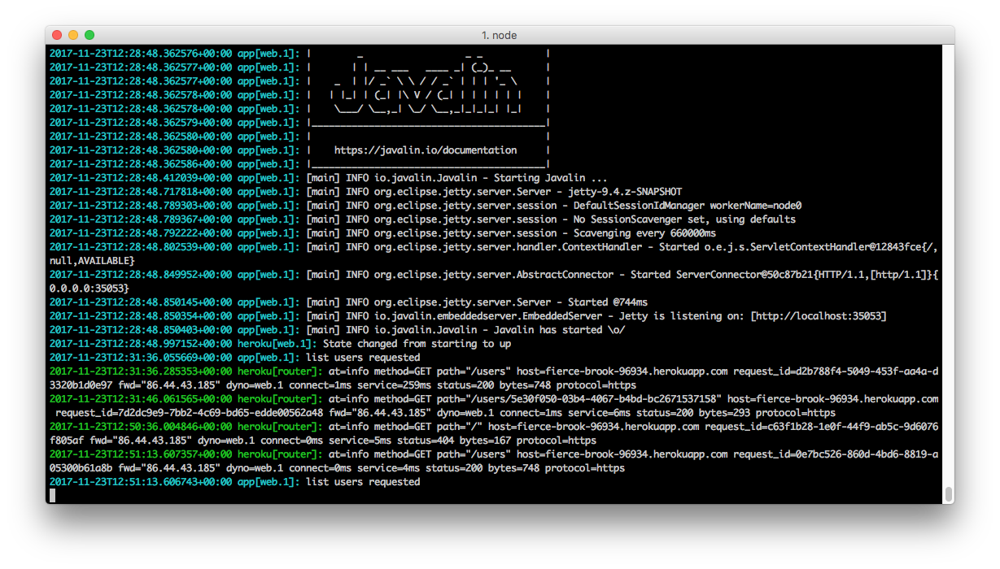

Objectives
Complete the API + write a range of unit tests to exercises the features. Deploy the service to the cloud.
Exercise Solutions
Exercise 1: getActivity
interface PacemakerInterface {
// ...
@GET("/users/{id}/activities/{activityId}")
Call<Activity> getActivity(@Path("id") String id, @Path("activityId") String activityId);
}PacemakerAPI (in pacemaker-skeleton-client)
public Activity getActivity(String userId, String activityId) {
Activity activity = null;
try {
Call<Activity> call = pacemakerInterface.getActivity(userId, activityId);
Response<Activity> response = call.execute();
activity = response.body();
} catch (Exception e) {
System.out.println(e.getMessage());
}
return activity;
}PacemakerConsoleService (fix the compile error with this new implementation)
@Command(description = "List all locations for a specific activity")
public void listActivityLocations(@Param(name = "activity-id") String id) {
Optional<Activity> activity = Optional.fromNullable(paceApi.getActivity(loggedInUser.getId(), id));
if (activity.isPresent()) {
// console.renderLocations(activity.get().route);
}
}Exercise 2: addLocation
interface PacemakerInterface {
// ...
@POST("/users/{id}/activities/{activityId}/locations")
Call<Location> addLocation(@Path("id") String id, @Path("activityId") String activityId, @Body Location location);
}PacemakerAPI (in pacemaker-skeleton-client)
public void addLocation(String id, String activityId, double latitude, double longitude) {
try {
Call<Location> call = pacemakerInterface.addLocation(id, activityId, new Location(latitude, longitude));
call.execute();
} catch (Exception e) {
System.out.println(e.getMessage());
}
}Also, addLocation method on PacemakerConsoleService will need to be updateD:
@Command(description = "Add location: Append location to an activity")
public void addLocation(@Param(name = "activity-id") String id,
@Param(name = "longitude") double longitude, @Param(name = "latitude") double latitude) {
Optional<Activity> activity = Optional.fromNullable(paceApi.getActivity(loggedInUser.getId(), id));
if (activity.isPresent()) {
paceApi.addLocation(loggedInUser.getId(), activity.get().id, latitude, longitude);
console.println("ok");
} else {
console.println("not found");
}
}User Endpoints
In this step, we will implement the remaining user endpoints:
GET /user/:id
DELETE /users
DELETE /users/:idThis will require additional work in two projects:
- pacemaker-skeleton
- pacemaker-skeleton-client
The Endpoints will need to be implemented in the server, and then exposed in the client.
pacemaker-skeleton
We have new endpoint to make available:
RestMain
app.delete("/users", ctx -> {
service.deleteUsers(ctx);
});
app.delete("/users/:id", ctx -> {
service.deleteUser(ctx);
});PacemakerRestService
public void deleteUser(Context ctx) {
String id = ctx.pathParam("id");
ctx.json(pacemaker.deleteUser(id));
}
public void deleteUsers(Context ctx) {
pacemaker.deleteUsers();
ctx.json(204);
}pacemaker-skeleton-client
We need these methods to be implemented:
PacemakerAPI
Additional methods in PacemakerInterface
@DELETE("/users")
Call<User> deleteUsers();
@DELETE("/users/{id}")
Call<User> deleteUser(@Path("id") String id);
@GET("/users/{id}")
Call<User> getUser(@Path("id") String id);And these are the additional methods in PacemakerAPI
public User getUser(String id) {
User user = null;
try {
Call<User> call = pacemakerInterface.getUser(id);
Response<User> response = call.execute();
user = response.body();
} catch (Exception e) {
System.out.println(e.getMessage());
}
return user;
}
public void deleteUsers() {
try {
Call<User> call = pacemakerInterface.deleteUsers();
call.execute();
} catch (Exception e) {
System.out.println(e.getMessage());
}
}
public User deleteUser(String id) {
User user = null;
try {
Call<User> call = pacemakerInterface.deleteUser(id);
Response<User> response = call.execute();
user = response.body();
} catch (Exception e) {
System.out.println(e.getMessage());
}
return user;
}We will tests these endpoints in the following steps.
User Tests
In pacemaker-skeleton-client, we can now proceed to implement some initial tests.
In the test folder, create two packages: models and controllers.
In the models package, we can start by bringing over some fixtures:
package models;
import java.util.ArrayList;
import java.util.Arrays;
import java.util.List;
public class Fixtures {
public static List<User> users =
new ArrayList<>(Arrays.asList(new User("marge", "simpson", "marge@simpson.com", "secret"),
new User("lisa", "simpson", "lisa@simpson.com", "secret"),
new User("bart", "simpson", "bart@simpson.com", "secret"),
new User("maggie", "simpson", "maggie@simpson.com", "secret")));
public static List<Activity> activities = new ArrayList<>(
Arrays.asList(new Activity("walk", "fridge", 0.001),
new Activity("walk", "bar", 1.0),
new Activity("run", "work", 2.2),
new Activity("walk", "shop", 2.5),
new Activity("cycle", "school", 4.5)));
public static List<Location> locations = new ArrayList<>(Arrays.asList(new Location(23.3, 33.3),
new Location(34.4, 45.2), new Location(25.3, 34.3), new Location(44.4, 23.3)));
public static List<Activity> margeActivities =
new ArrayList<>(Arrays.asList(activities.get(0), activities.get(1)));
public static List<Activity> lisasActivities =
new ArrayList<>(Arrays.asList(activities.get(2), activities.get(3)));
public static List<Location> route1 =
new ArrayList<>(Arrays.asList(locations.get(0), locations.get(1)));
public static List<Location> route2 =
new ArrayList<>(Arrays.asList(locations.get(2), locations.get(3)));
public static List<Activity> activitiesSortedByType =
new ArrayList<>(Arrays.asList(activities.get(4), activities.get(2), activities.get(1),
activities.get(0), activities.get(3)));
}There are more or less the same as the fixture we had in the sample solution to assignment 1.
We can now try this test:
package controllers;
import static org.junit.Assert.*;
import java.util.Collection;
import org.junit.After;
import org.junit.Before;
import org.junit.Test;
import models.User;
import static models.Fixtures.users;
public class UserTest {
PacemakerAPI pacemaker = new PacemakerAPI("http://localhost:7000");
User homer = new User("homer", "simpson", "homer@simpson.com", "secret");
@Before
public void setup() {
pacemaker.deleteUsers();
}
@After
public void tearDown() {
}
@Test
public void testCreateUser() {
User user = pacemaker.createUser(homer.firstname, homer.lastname, homer.email, homer.password);
assertEquals(user, homer);
User user2 = pacemaker.getUserByEmail(homer.email);
assertEquals(user2, homer);
}
@Test
public void testCreateUsers() {
users.forEach(
user -> pacemaker.createUser(user.firstname, user.lastname, user.email, user.password));
Collection<User> returnedUsers = pacemaker.getUsers();
assertEquals(users.size(), returnedUsers.size());
}
}Remember - you must first run pacemaker-skeleton before running these tests. If these tests fail, it could be because you have previously added users to your current app session via the RESTLET client. If this is the case, terminate the pacemaker-skeleton session, restart it and try the tests again. They should pass.
Notice that setup() deletes all users before each test. Commenting this out will cause one of the tests to fail. Can you see why?
Create Activity Test
We can now compose this new unit test to exercise the activity endpoint:
package controllers;
import static org.junit.Assert.assertEquals;
import static org.junit.Assert.assertNotNull;
import static org.junit.Assert.assertNull;
import org.junit.After;
import org.junit.Before;
import org.junit.Test;
import models.Activity;
import models.User;
public class ActivityTest {
PacemakerAPI pacemaker = new PacemakerAPI("http://localhost:7000");
User homer = new User("homer", "simpson", "homer@simpson.com", "secret");
@Before
public void setup() {
pacemaker.deleteUsers();
homer = pacemaker.createUser(homer.firstname, homer.lastname, homer.email, homer.password);
}
@After
public void tearDown() {
}
@Test
public void testCreateActivity() {
Activity activity = new Activity("walk", "shop", 2.5);
Activity returnedActivity = pacemaker.createActivity(homer.id, activity.type, activity.location, activity.distance);
assertEquals(activity.type, returnedActivity.type);
assertEquals(activity.location, returnedActivity.location);
assertEquals(activity.distance, returnedActivity.distance, 0.001);
assertNotNull(returnedActivity.id);
}
}The createActivity test above is structured as follows:
- create a local activity test object
- invoke the api to create a remote activity
- compare the returned activity with the test object
- verify that the returned activity has an id
Make sure the server is running - and run the test.
Get and Delete Activity tests
Currently we might say that the activities endpoint is not quite testable yet - until we implement some way of removing activities. We will implement an API to remove all activities for a given user, and then write some tests to exercise this new feature.
First - start with the server:
pacemaker-skeleton
We need to implement new api - delete all activities for a user. This requires 3 changes:
PacemakerAPI
Method to remove all activities for a given user from our model:
public void deleteActivities(String id) {
Optional<User> user = Optional.fromNullable(userIndex.get(id));
if (user.isPresent()) {
user.get().activities.values().forEach(activity -> activitiesIndex.remove(activity.getId()));
user.get().activities.clear();
}
}PacemakerRestService
Service implementation - which will be invoked by Javalin when this delete request is triggered:
public void deleteActivities(Context ctx) {
String id = ctx.pathParam("id");
pacemaker.deleteActivities(id);
ctx.json(204);
}RestMain
The registration of the new api path with Javalin:
app.delete("/users/:id/activities", ctx -> {
service.deleteActivities(ctx);
});pacemaker-skeleton-client
PacemakerAPI
Add the following route:
@DELETE("/users/{id}/activities")
Call<String> deleteActivities(@Path("id") String id);and the asssociated method call:
public void deleteActivities(String id) {
try {
Call<String> call = pacemakerInterface.deleteActivities(id);
call.execute();
} catch (Exception e) {
System.out.println(e.getMessage());
}
}ActivityTest.java
We can now write some new tests:
@Test
public void testGetActivity() {
Activity activity = new Activity("run", "fridge", 0.5);
Activity returnedActivity1 = pacemaker.createActivity(homer.id, activity.type, activity.location, activity.distance);
Activity returnedActivity2 = pacemaker.getActivity(homer.id, returnedActivity1.id);
assertEquals(returnedActivity1, returnedActivity2);
}
@Test
public void testDeleteActivity() {
Activity activity = new Activity("sprint", "pub", 4.5);
Activity returnedActivity = pacemaker.createActivity(homer.id, activity.type, activity.location, activity.distance);
assertNotNull (returnedActivity);
pacemaker.deleteActivities(homer.id);
returnedActivity = pacemaker.getActivity(homer.id, returnedActivity.id);
assertNull (returnedActivity);
}Read these tests carefully - and verify that they all pass.

.here - two tests failed...check out why...fix below doesn't work
If you find your testGetActivity fails, it could be that you have a case-issue...i.e. activityid in one place and activityId in another. Ensure both are the same case e.g.:
PacemakerRestService.java:
public void getActivity(Context ctx) {
String id = ctx.pathParam("activityid");
Activity activity = pacemaker.getActivity(id);
if (activity != null) {
ctx.json(activity);
} else {
ctx.status(404);
}
}RestMain.java:
app.get("/users/:id/activities/:activityid", ctx -> {
service.getActivity(ctx);
});Deployment Preparation
In order to deploy pacemaker-skeleton (i.e. the server) we need to make some small modifications to the the pacemaker-skeleton project.
RestMain
First, introduce a new method into the RestMain class:
private static int getAssignedPort() {
ProcessBuilder processBuilder = new ProcessBuilder();
if (processBuilder.environment().get("PORT") != null) {
return Integer.parseInt(processBuilder.environment().get("PORT"));
}
return 7000;
}This is required as we need to detect the port the cloud provider may have assigned to our app on startup (7000 is only for local test/development).
The main method in RestMain can now be changed to this:
public static void main(String[] args) throws Exception {
Javalin app = Javalin.create();
app.port(getAssignedPort());
app.start();
PacemakerRestService service = new PacemakerRestService();
configRoutes(app, service);
}pom.xml
The pom for pacemaker-skeleton will need to be augmented to support deployment.
First, rename the version as follows:
<groupId>pacemaker</groupId>
<artifactId>pacemaker-skeleton</artifactId>
<version>1.0</version>
<packaging>jar</packaging>We have just removed SNAPSHOT from the version information.
Now introduce a new set of plugins:
<plugin>
<artifactId>maven-assembly-plugin</artifactId>
<executions>
<execution>
<phase>package</phase>
<goals>
<goal>single</goal>
</goals>
</execution>
</executions>
<configuration>
<descriptorRefs>
<descriptorRef>jar-with-dependencies</descriptorRef>
</descriptorRefs>
<archive>
<manifest>
<mainClass>controllers.RestMain</mainClass>
</manifest>
</archive>
</configuration>
</plugin>
<plugin>
<groupId>com.heroku.sdk</groupId>
<artifactId>heroku-maven-plugin</artifactId>
<version>1.1.3</version>
<configuration>
<jdkVersion>1.8</jdkVersion>
<appName>YOUR-APP-NAME</appName>
<processTypes>
<web>java -jar target/pacemaker-skeleton-1.0-jar-with-dependencies.jar</web>
</processTypes>
</configuration>
</plugin>This must be in the <plugins> section of the POM.
Note the <appName>YOUR-APP-NAME</appName> element - you will replace this with your own application name in the next step.
Just to make sure that the pom file is without errors by entering the following commands:
mvn clean
mvn packageThe 'package' command will pull down a few new dependencies from the remote repo, so make sure you are connected to the Internet.
Now make sure that the ./target folder contains this file:
- pacemaker-skeleton-1.0-jar-with-dependencies.jar
This is a compiled version of our application, containing all dependencies. This is the artifact that will be deployed to the cloud (in the next step).
Heroku
We will use the Heroku provider. Create a free account on the service now:
You will also need to download and install the Heroku CLI:
Once installed, open a command prompt/shell inside the pacemaker-skeleton folder, and log in to heroku:
heroku login
Email: youremail@domain.com
Password: **********
Logged in as youremail@domain.comOnce logged in - you have a range of commands available:
We will be interested in these commands:
- create
- apps
- logs
Lets try to create an app:
heroku create
Creating app... done, ⬢ fierce-brook-96934
https://fierce-brook-96934.herokuapp.com/ | https://git.heroku.com/fierce-brook-96934.gitHeroku generates the url when you create the app. If you forget it, you can list all apps:
heroku appsThe apps will also be listed on the web app (if you are logged in)
Deployment
Before we deploy the app - we need to place the application name (as generated above) into our POM e.g. ours is:
<appName>fierce-brook-96934</appName>(This was YOUR-APP-NAME previously).
From within the application folder, enter this command to deploy:
mvn heroku:deployThis will take a few minutes - and should conclude with something like this:
[INFO] -----> Packaging application...
[INFO] - app: fierce-brook-96934
[INFO] - including: target/
[INFO] -----> Creating build...
[INFO] - file: target/heroku/slug.tgz
[INFO] - size: 12MB
[INFO] -----> Uploading build...
[INFO] - success
[INFO] -----> Deploying...
[INFO] remote:
[INFO] remote: -----> heroku-maven-plugin app detected
[INFO] remote: -----> Installing OpenJDK 1.8... done
[INFO] remote: -----> Discovering process types
[INFO] remote: Procfile declares types -> web
[INFO] remote:
[INFO] remote: -----> Compressing...
[INFO] remote: Done: 61.1M
[INFO] remote: -----> Launching...
[INFO] remote: Released v7
[INFO] remote: https://fierce-brook-96934.herokuapp.com/ deployed to Heroku
[INFO] remote:
[INFO] -----> Done
[INFO] ------------------------------------------------------------------------
[INFO] BUILD SUCCESS
[INFO] ------------------------------------------------------------------------
[INFO] Total time: 54.253 s
[INFO] Finished at: 2017-11-23T12:28:47Z
[INFO] Final Memory: 36M/622M
[INFO] ------------------------------------------------------------------------If all goes well, the application should be deployed on the generated url. The application does not have a UX, so you will need to test it via the api:

If you wish to see the application console - for debugging or other purposes - you can run this command :
heroku logs --tailThis will reveal the console, more or less as you would have seen it in Eclipse when running locally:

Exercises
Project Archives at this stage:
- https://github.com/wit-computing-msc-2018/pacemaker-skeleton/releases/tag/lab.11.end
- https://github.com/wit-computing-msc-2018/pacemaker-client/releases/tag/lab.11.end
Exercise 1:
Test the deployed api. Currently, when the tests in pacemaker-skeleton-client launches, it is expecting the API on localhost:
PacemakerAPI pacemaker = new PacemakerAPI("http://localhost:7000");Change this to your deployed application url:
PacemakerAPI pacemaker = new PacemakerAPI("https://fierce-brook-34.herokuapp.com/");(Use your own url here)
And run all tests. They should pass. Keep an eye on the logs as the test run.
Exercise 2
Try the same experiment with the pacemaker CLI. I.e. change PacemakerConsoleService
public class PacemakerConsoleService {
private PacemakerAPI paceApi = new PacemakerAPI("http://localhost:7000");to use the deployed application:
public class PacemakerConsoleService {
PacemakerAPI pacemaker = new PacemakerAPI("https://fierce-brook-34.herokuapp.com/");Exercise 3:
Explore the deployed service using the Restlet Chrome plugin
Exercise 4:
Evolve a set of tests to verify that locations can be added to activities.